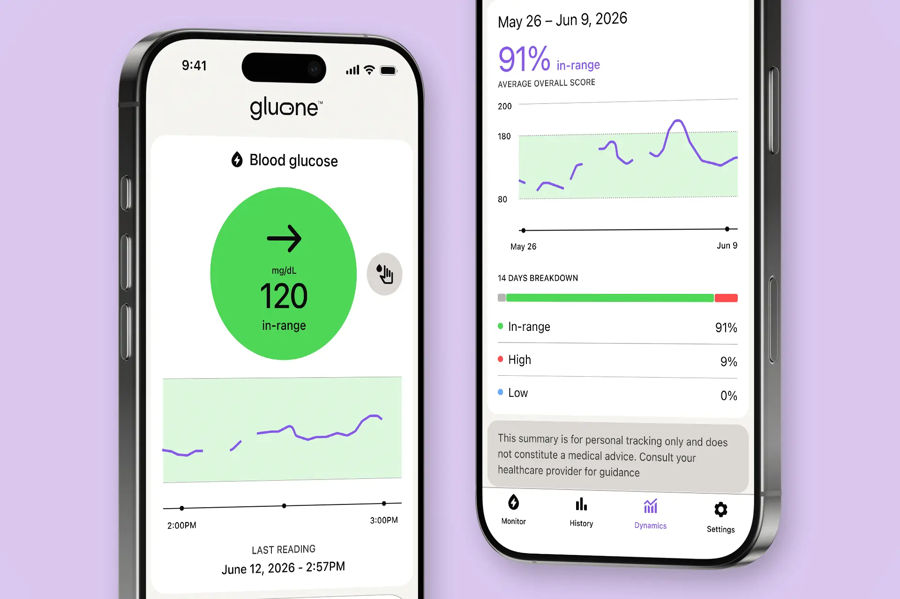
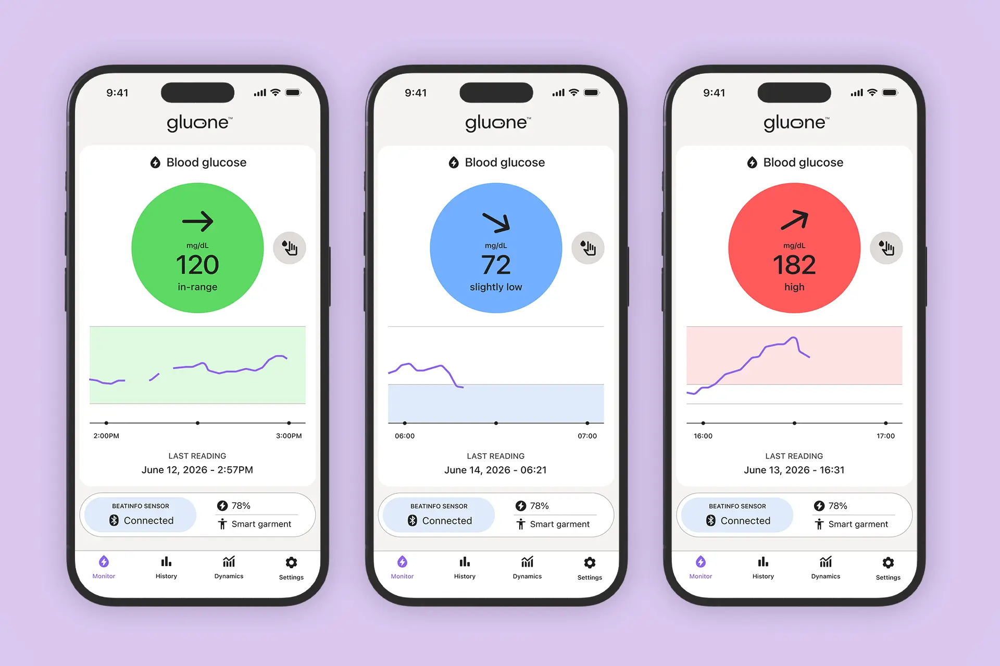
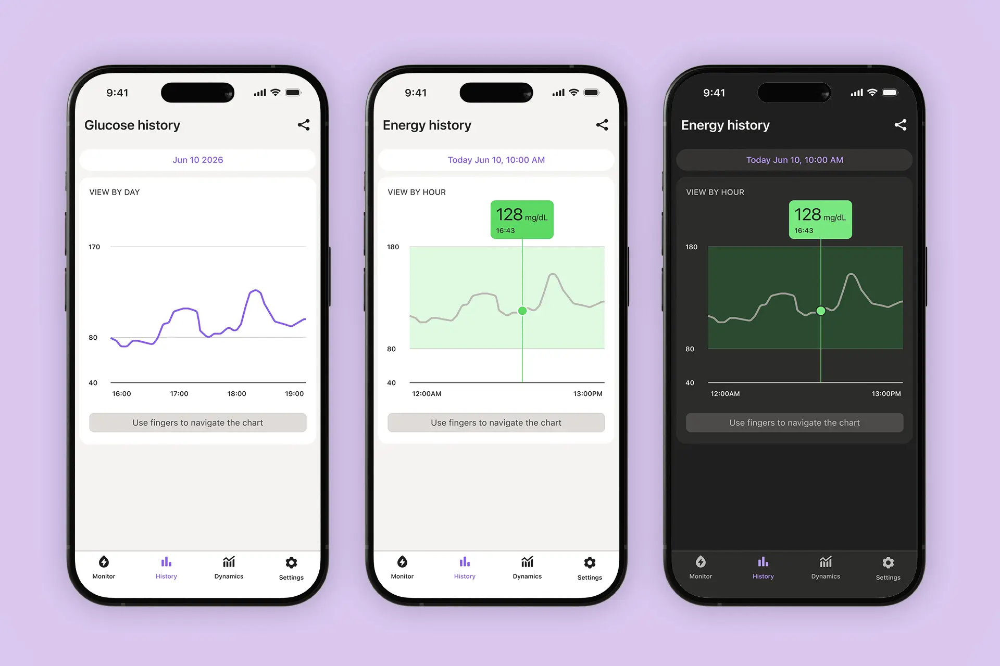
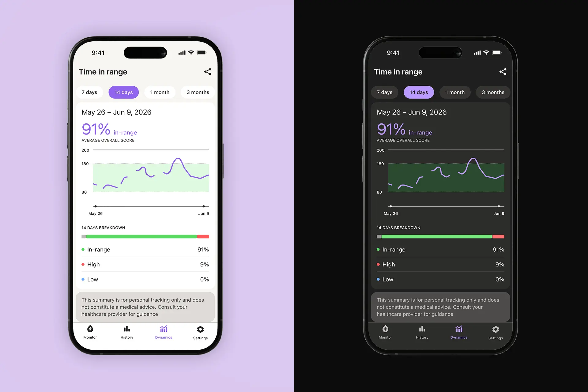

Gluone app

Overview
Gluone is the companion app for a non-invasive continuous glucose monitor. A wireless sensor reads glucose through a biomarker, and the app turns those readings into a screen people can understand at a glance.
Tasked with designing the interface, I worked alongside the development team to bring complex glucose data into a clear, accessible UI.


The project
One glance shows the glucose level and its trend.
The hardest part was setting the tone. A glucose app has to earn trust, and the North American market is crowded: the major competitors already use blues, greens and yellows as brand colors. The client team and I took a slightly bolder approach and chose a specific purple that feels digital without losing that trust.
In competing apps, charts are often crowded and screens carry a lot of text. I took a simpler, more human approach: the important glucose information is carried by text, icons and color together, and each piece stays clearly separated from the rest. Colors are functional, each one marking a message or a glucose state, and the whole system is built around the brand hue so it stays coherent. Everything is tested for contrast and accessibility in light and dark mode.
Because icons are mainly a visual tool, I kept them to a minimum and paired them with text. Buttons and touch areas are well spaced apart and generously sized, to make the app easier to use.
